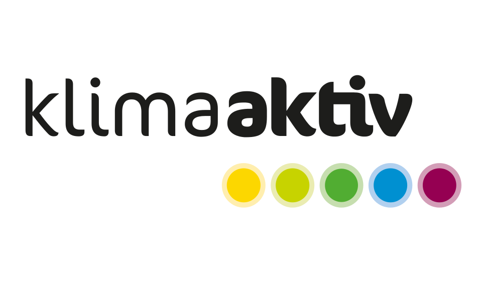
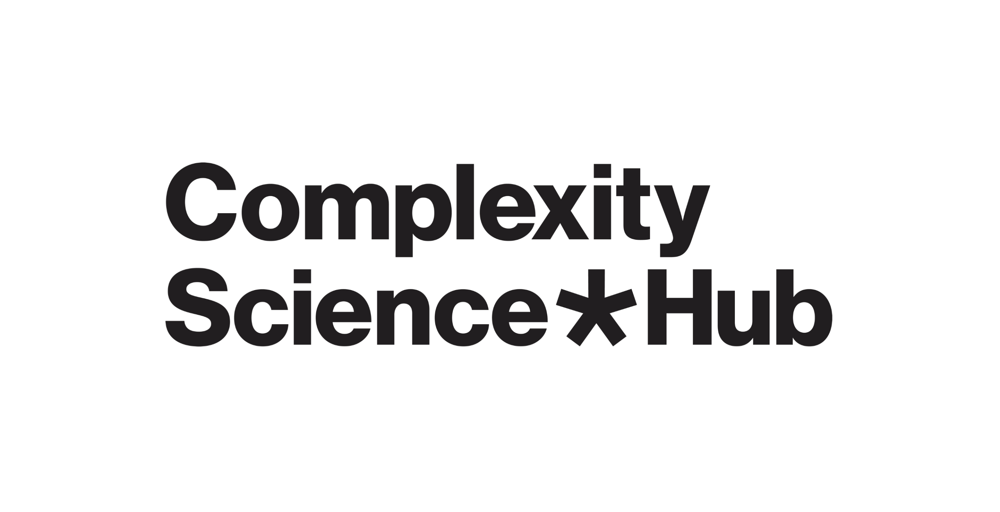
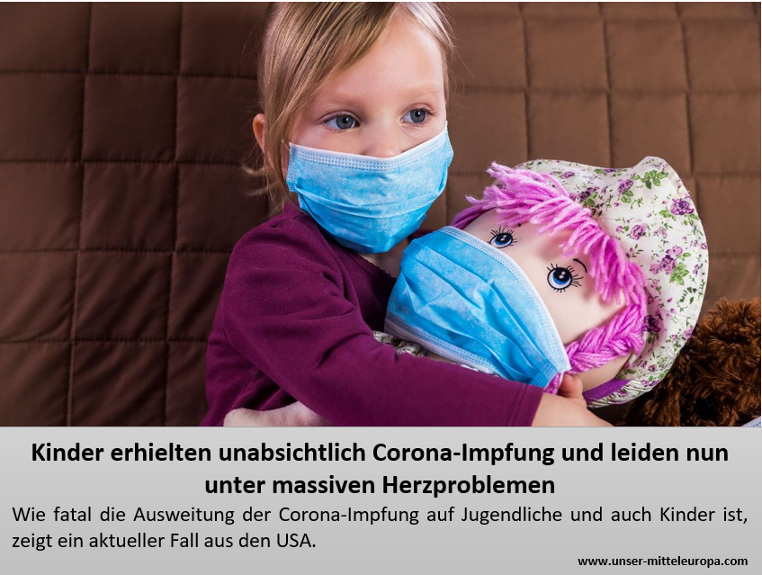
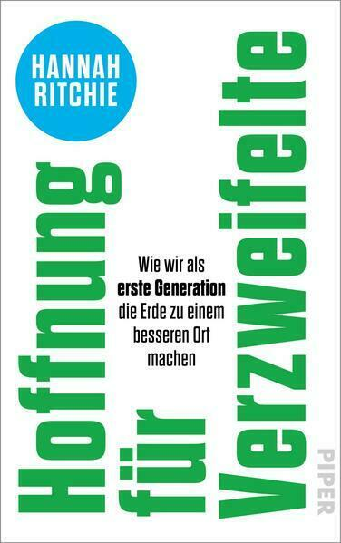

Soziale Medien sind (k)ein Klimakiller
Der Einfluss von Algorithmen, Echokammern und KI auf den digitalen Diskurs und was zu tun ist.
Mag. Dr. Hannah Metzler
Complexity Science Hub & Medizinische Universität Wien
Klimaaktiv Webinar am 8. Mai 2024



Emotionen & Falschinformation


Emotion = Manipulation?
- Falsche & richtige COVID-19 Nachrichten
- Wie zutreffend ist diese Nachricht?
- Löst die Nachricht ein Gefühl aus?


Warum waren die Menschen wütend?

- Beschreibung erster Gedanken:
\(\rightarrow\) Sie erkannten die falschen Nachrichten
- Ärger über Verbreitung
- Widerspruch zur Weltsicht
Emotion \(\neq\) Manipulation
Sie sind mit ihren Sorgen nicht allein

Überzeugen im Alltag ist schwierig

Warum ist überzeugen so schwierig?
Menschen sind nicht dumm!

- Was passiert mit leichtgläubigen Individuen?
- Voraussetzung für Kommunikation:
(im Durschnitt) Vorteile für Sender & Empfänger
Ehrliche Kommunikationssignale


- Grundzustand des Menschen ist Skepsis
- Fähigkeit zu Vertrauen & Kooperation: einzigartig
- Möglich, weil wir fähig sind, auf Wahrheit zu überprüfen
Was heißt das für Falschinformation?


Ideen verbreiten sich nicht wie Viren
- Überzeugungseffekte sind klein, “echte” Propaganda schwer
- Populismus: Aufgreifen, was Menschen bereits glauben
- Menschen glauben, was sie glauben, aus guten Gründen
- Oft soziale Gründe (Beispiel: Bio, Klima, Atomkraft)
Fehlinformation auf sozialen Medien
- Kleiner Anteil der News: 1-6% in 5 Studien von 2016-2019
- Minderheit der User teilt Großteil der Falschinformation:
- 1% User teilen 75% (2018-2019, USA)
- 5% User teilen 50% (2016, USA)
- 2% machen 75% Website-Visits aus (2022, Deutschland)
- Falschinformation überlappt mit Hassrede


Wer sind die extremen Stimmen?

- politisch Motivierte mit extremen Einstellungen
- Auch offline feindselig, online sichtbarer
Warum?
- Status & Privilegien Verlust
- Frustration im echten Leben
- Kein Vertrauen in Institutionen
- Sich nicht repräsentiert fühlen
Digitale Echokammern & Filter Bubbles

- Echokammern: offline stärker als online
- Ausmaß variiert stark
- 20.6% Facebook User: 75% der Posts aus gleichgesinnten Quellen
- 23.1%: unter 25% der Posts
- Algorithmen: kleiner (6%) & viel weniger starker Einfluss als soziales Netzwerk
- Gruppen & Pages: stark segregiert
Einfluss von Algorithmen
Facebook Studie: Down-ranking von gleichgesinnten Posts

Algorithmus: Down-Ranking gleichgesinnter Quellen

- Ähnliche Ergebnisse in 2 weiteren Studien:
Kein Algorithmus oder keine Re-Shares
Echokammern reduzieren? Keine gute Idee.
- Politische Polarisierung in den USA (Studie 2017)

- Posts von Meinungsführern der anderen Partei
- Einstellungen wurden extremer, besonders in Republikanern
- Extreme Stimmen verstärken Polarisierung
Soziale Dynamik auf Social Media


- Soziale Identitäten ausprobieren
- Uns selbst und andere verstehen
- Mehr Kontakt mit andersartigen Menschen ohne Kontextverständnis
Suche nach sozialem Status
- Keine Konsequenzen von aggressivem Verhalten
- Wettbewerb von Gruppen
Social Media verzerren die Wirklichkeit

- Extreme Meinungen sind sichtbar
- Status für politisch Motivierte
- Bsp links: Doomsday, Degrowth
- Bsp rechts: Windkraft Proteste, Armut
- Moderate melden sich nicht zu Wort
- Bsp: Klimawandel + Wirtschaft
Scheinbare Polarisierung
\(\rightarrow\) Wahrgenommene politische Spaltung verstärkt die emotionale Polarisierung
2 Prinzipien
- Menschen sind nicht dumm!
- Argumente wirken, aber müssen dort ansetzen, wo die guten, oft sozialen Gründe für Überzeugungen liegen
- Vertrauen stärken und nicht verspielen: Transparenz


Individuelle Ebene
- Verzerrung & Scheinbare Polarisierung sichtbar machen
- Übereinstimmung & moderate Meinungen sichtbar machen
- Kleine Schritte in Richtung neue Sichtweisen machen


Für Neugierige
Bücher

Ritchie, 2023 Nachhaltigkeit & Klimawandel

Mercier, 2020 Falschinformation & Propaganda
Bail, 2021 Polarisierung & Social Media


Social Media sind verantwortlich!